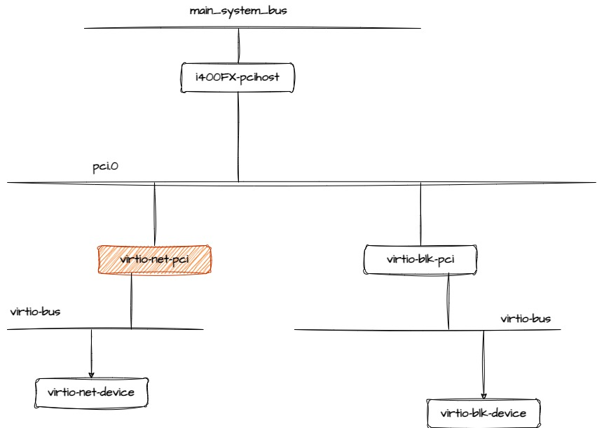
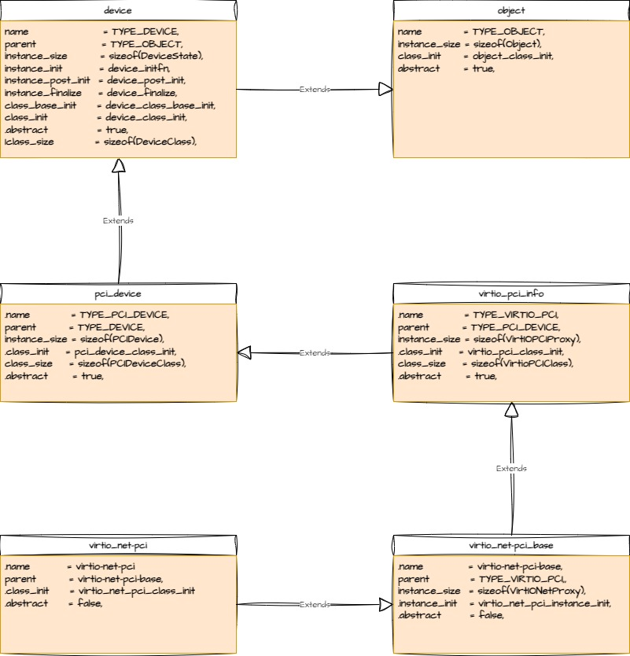

Qemu: Virtio_net_pci¶
Setting realize function for virto-pci¶
virio 设备首先需要创建一个PCI设备，叫做virtio pci 代理设备，这个代理设备会挂在到PCI总线上，
接着virtio代理设备会再次创建一条virtio总线，这样一个真正的virtio设备就可以挂载到这条总线上了。
virtio-pci设备的继承关系为 DeviceClass==>PCIDeviceClass==>VirtioPCIClass
static void virtio_pci_class_init(ObjectClass *klass, void *data)
{
DeviceClass *dc = DEVICE_CLASS(klass);
PCIDeviceClass *k = PCI_DEVICE_CLASS(klass);
VirtioPCIClass *vpciklass = VIRTIO_PCI_CLASS(klass);
dc->props = virtio_pci_properties;
k->realize = virtio_pci_realize;
k->exit = virtio_pci_exit;
k->vendor_id = PCI_VENDOR_ID_REDHAT_QUMRANET;
k->revision = VIRTIO_PCI_ABI_VERSION;
k->class_id = PCI_CLASS_OTHERS;
device_class_set_parent_realize(dc, virtio_pci_dc_realize,
&vpciklass->parent_dc_realize);
dc->reset = virtio_pci_reset;
}
void device_class_set_parent_realize(DeviceClass *dc,
DeviceRealize dev_realize,
DeviceRealize *parent_realize)
{
*parent_realize = dc->realize;
dc->realize = dev_realize;
}
virtio_pci_class_init首先将PCIDeviceClass->realize函数设置为自己的virtio_pci_realize函数
将DeviceClass->realize设置为virtio_pci_dc_realize
而将VirtioPCIClass->parent_dc_realize设置为DeviceClass->realize,这个值为pci_qdev_realize
通常情况下，父类的realize会调用子类的realize函数，DeviceClass->realize(pci_qdev_realize)
会调用PCIDeviceClass->realize, 而PCIDeviceClass->realize会调用子类型的realize函数
Note
通常在设备realize过程中子类型的realize函数需要先做某些事情的时候会利用这种方法
而VirtioPCIClass->realize在virtio-net-pci 的类初始化的时候被设置为virtio_net_pci_realize.
static void virtio_net_pci_class_init(ObjectClass *klass, void *data)
{
DeviceClass *dc = DEVICE_CLASS(klass);
PCIDeviceClass *k = PCI_DEVICE_CLASS(klass);
VirtioPCIClass *vpciklass = VIRTIO_PCI_CLASS(klass);
k->romfile = "efi-virtio.rom";
k->vendor_id = PCI_VENDOR_ID_REDHAT_QUMRANET;
k->device_id = PCI_DEVICE_ID_VIRTIO_NET;
k->revision = VIRTIO_PCI_ABI_VERSION;
k->class_id = PCI_CLASS_NETWORK_ETHERNET;
set_bit(DEVICE_CATEGORY_NETWORK, dc->categories);
dc->props = virtio_net_properties;
vpciklass->realize = virtio_net_pci_realize;
}
Class |
realize |
parent_dc_realize |
|---|---|---|
DeviceClass |
virtio_pci_dc_realize |
|
PCIDeviceClass |
virtio_pci_realize |
|
VirtioPCIClass |
virtio_net_pci_realize |
pci_qdev_realize |
所以，在virtio-net-pci设备relize的时候，device_set_realized会调用DeviceClass->realize （virtio_pci_dc_realize)
virtio_pci_dc_realize会调用VirtipPCIClass->parent_dc_realize(pci_qdev_realize)
static void virtio_pci_dc_realize(DeviceState *qdev, Error **errp) { VirtioPCIClass *vpciklass = VIRTIO_PCI_GET_CLASS(qdev); VirtIOPCIProxy *proxy = VIRTIO_PCI(qdev); PCIDevice *pci_dev = &proxy->pci_dev; if (!(proxy->flags & VIRTIO_PCI_FLAG_DISABLE_PCIE) && virtio_pci_modern(proxy)) { pci_dev->cap_present |= QEMU_PCI_CAP_EXPRESS; } vpciklass->parent_dc_realize(qdev, errp); }
pci_qdev_realize会调用PCIDeviceClass->realize(virtio_pci_realize)
virtio_pci_realize会调用VirtioPCIClass->realize(virtio_net_pci_realize)
virtio-net-pci 设备的具现(realize)是由函数 virtio_net_pci_realize实现
static void virtio_pci_realize(PCIDevice *pci_dev, Error **errp)
{
VirtIOPCIProxy *proxy = VIRTIO_PCI(pci_dev);
VirtioPCIClass *k = VIRTIO_PCI_GET_CLASS(pci_dev);
...
...
...
if (k->realize) {
k->realize(proxy, errp);
}
这里的k就是virtio_net_pci的类
Thread 1 "qemu-system-x86" hit Breakpoint 13, virtio_net_pci_realize (vpci_dev=0x555557293140, errp=0x7fffffffe3d0)
at /usr/src/debug/qemu/4.1.0-r0/qemu-4.1.0/hw/virtio/virtio-net-pci.c:48
48 /usr/src/debug/qemu/4.1.0-r0/qemu-4.1.0/hw/virtio/virtio-net-pci.c: No such file or directory.
(gdb) bt
#0 virtio_net_pci_realize (vpci_dev=0x555557293140, errp=0x7fffffffe3d0) at /usr/src/debug/qemu/4.1.0-r0/qemu-4.1.0/hw/virtio/virtio-net-pci.c:48
#1 0x0000555555a6b022 in virtio_pci_realize (pci_dev=0x555557293140, errp=0x7fffffffe3d0) at /usr/src/debug/qemu/4.1.0-r0/qemu-4.1.0/hw/virtio/virtio-pci.c:1788
#2 0x0000555555a1bbab in pci_qdev_realize (qdev=0x555557293140, errp=<optimized out>) at /usr/src/debug/qemu/4.1.0-r0/qemu-4.1.0/hw/pci/pci.c:2096
#3 0x000055555599c655 in device_set_realized (obj=<optimized out>, value=<optimized out>, errp=0x7fffffffe598)
at /usr/src/debug/qemu/4.1.0-r0/qemu-4.1.0/hw/core/qdev.c:834
#4 0x0000555555ad4dd7 in property_set_bool (obj=0x555557293140, v=<optimized out>, name=<optimized out>, opaque=0x5555572197e0, errp=0x7fffffffe598)
at /usr/src/debug/qemu/4.1.0-r0/qemu-4.1.0/qom/object.c:2079
#5 0x0000555555ad9270 in object_property_set_qobject (obj=0x555557293140, value=<optimized out>, name=0x555555cac945 "realized", errp=0x7fffffffe598)
at /usr/src/debug/qemu/4.1.0-r0/qemu-4.1.0/qom/qom-qobject.c:26
#6 0x0000555555ad6b56 in object_property_set_bool (obj=0x555557293140, value=<optimized out>, name=0x555555cac945 "realized", errp=0x7fffffffe598)
at /usr/src/debug/qemu/4.1.0-r0/qemu-4.1.0/qom/object.c:1337
#7 0x000055555593e394 in qdev_device_add (opts=0x55555637e1c0, errp=<optimized out>) at /usr/src/debug/qemu/4.1.0-r0/qemu-4.1.0/qdev-monitor.c:634
#8 0x00005555559403df in device_init_func (opaque=<optimized out>, opts=<optimized out>, errp=<optimized out>) at /usr/src/debug/qemu/4.1.0-r0/qemu-4.1.0/vl.c:2191
#9 0x0000555555bcd30a in qemu_opts_foreach (list=<optimized out>, func=0x5555559403d0 <device_init_func>, opaque=0x0, errp=0x5555562bb3d0 <error_fatal>)
at /usr/src/debug/qemu/4.1.0-r0/qemu-4.1.0/util/qemu-option.c:1170
#10 0x00005555557e152c in main (argc=<optimized out>, argv=<optimized out>, envp=<optimized out>) at /usr/src/debug/qemu/4.1.0-r0/qemu-4.1.0/vl.c:4375
(gdb) frame 1
#1 0x0000555555a6b022 in virtio_pci_realize (pci_dev=0x555557293140, errp=0x7fffffffe3d0) at /usr/src/debug/qemu/4.1.0-r0/qemu-4.1.0/hw/virtio/virtio-pci.c:1788
1788 /usr/src/debug/qemu/4.1.0-r0/qemu-4.1.0/hw/virtio/virtio-pci.c: No such file or directory.
(gdb) info local
proxy = 0x555557293140
__func__ = "virtio_pci_realize"
k = 0x55555639f330
pcie_port = <optimized out>
__PRETTY_FUNCTION__ = "virtio_pci_realize"
(gdb) p *k->realize
$83 = {void (VirtIOPCIProxy *, Error **)} 0x5555558a7da0 <virtio_net_pci_realize>
(gdb)